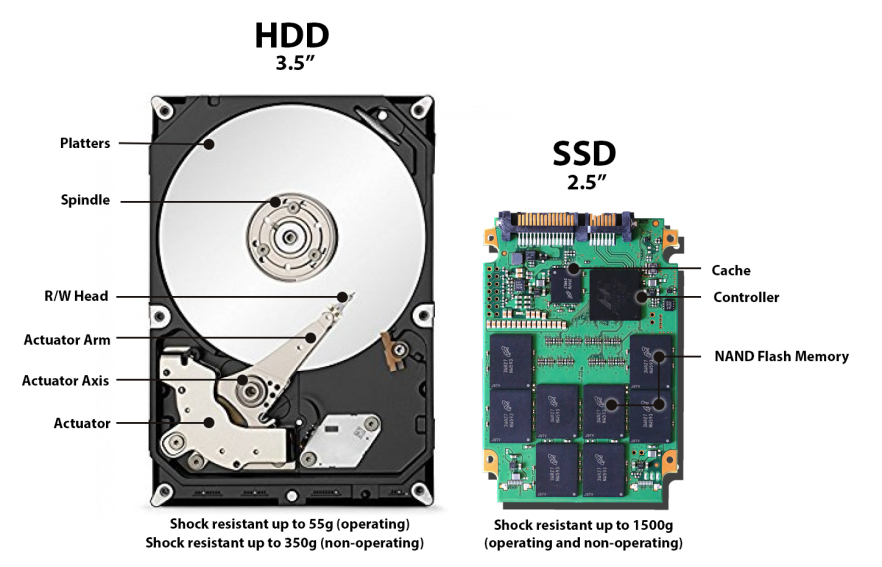

A storage device is any computing hardware that is used for storing, porting and extracting data. It holds and stores
information both temporarily or permanently, and can be internal or external to any computing device.

Types of storage devices:
- Magnetic Storage Devices:
- Fixed hard disks and drives
- Portable and removable hard disk
- Magnetic tape drives and tapes
- Optimal storage device:
- DVD RAM
- Blu-ray
- CD(ROMS,RWs,Rs)
- DVD(ROMS,RWs,Rs)
- ROM stands for read-only memory; R stands for recordable, RW stands for re-writable
- Solid-state storage (SSD):
- Memory sticks and pen drives
- Flash memory cards
- Hard disk drive (HHD)